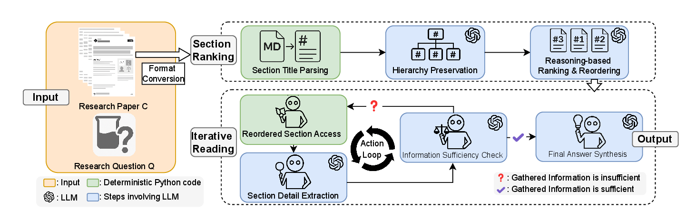
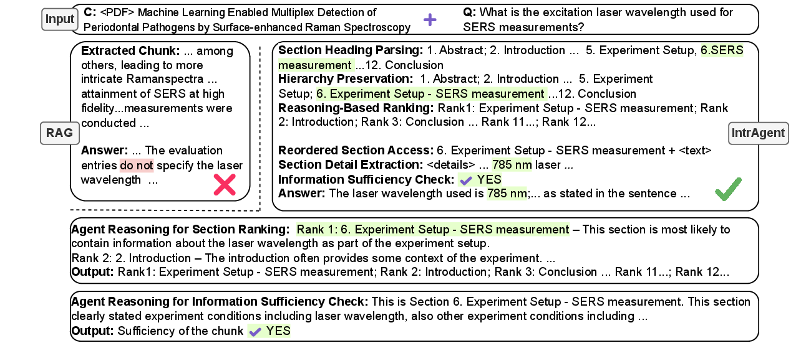

Academic Project Website
IntrAgent: An LLM Agent for Content-Grounded Information Retrieval through Literature Review
Abstract
Scientific research often depends on accurately extracting metadata, experimental setups, measurements, and conclusions from prior literature. This paper introduces IntraView, a new task for content-grounded information retrieval from a provided scientific paper, and proposes IntrAgent, an LLM-based agent designed to solve it faithfully.
IntrAgent mimics human literature reading with a two-stage pipeline: it first ranks paper sections through structure-aware reasoning, then performs iterative reading with an explicit sufficiency check to decide whether additional evidence is needed. To evaluate this setting, the paper presents IntraBench, a benchmark of 315 instances across five STEM domains. Across seven backbone LLMs, IntrAgent improves average cross-domain accuracy by 13.2% over state-of-the-art RAG and literature-agent baselines.
Key Contributions
- Defines IntraView, a new task for faithful information retrieval from a provided scientific paper rather than from external search.
- Introduces IntrAgent, a specialized LLM agent that follows a human-like workflow: identify promising sections, extract evidence, and stop when support is sufficient.
- Develops two core mechanisms for the task: hierarchy-preserving section ranking and iterative reading with information sufficiency checking.
- Builds IntraBench, the first benchmark for this setting, covering 315 instances across five impactful STEM domains.
IntraView Task
IntraView is formulated as a content question answering problem over a full scientific paper. Given a literature document C and a research-driven query Q, the system must return an answer A that is accurate, concise, and explicitly grounded in the provided paper.
Compared with standard content QA, the task is harder because scientific papers are long, structurally complex, and filled with domain-specific terminology. The relevant evidence may appear anywhere in the document, may require cross-referencing multiple sections, and may sometimes be absent entirely, making hallucination control central to the task.
IntrAgent Method
Stage 1: Section Ranking
IntrAgent first parses section titles and preserves the paper hierarchy so the model can reason over the document as a structured artifact rather than a flat list of chunks. The LLM then ranks sections by likely relevance to the question, producing a reordered reading path.
This hierarchy-aware step is designed to better align scientific questions with the parts of a paper most likely to contain supporting evidence.
Stage 2: Iterative Reading
The agent reads the ranked sections sequentially, extracts anchored details such as terminology, measurements, results, and comparisons, and stores them in short-term memory for answer synthesis.
After each reading step, IntrAgent performs an explicit information sufficiency check. If the evidence is still incomplete, it continues reading; otherwise it stops and synthesizes a grounded answer.

IntraBench Benchmark
To evaluate IntraView, the paper introduces IntraBench, the first benchmark specifically designed for literature-grounded information retrieval. It contains 315 test instances derived from expert-authored questions paired with research papers.
The benchmark spans five high-impact domains and is intended to capture technical depth, conceptual complexity, and domain-specific phrasing encountered in real literature review workflows.

Benchmark Construction and Evaluation
LLM-Grounded Multiple-Choice Evaluation. The paper argues that scientific answers are difficult to score with surface-form metrics because abbreviations, synonyms, and domain-specific expressions may all refer to the same concept, while numerical and factual outputs require exact semantic correctness. To address this, IntraBench uses multiple-choice answer sets during evaluation, while the tested systems still produce short free-form answers.
An LLM then maps each generated answer to the most relevant choice. This mapping helps normalize terminology variation and avoids brittle string matching. Each question includes one correct answer plus five distractors, and the options consistently include “All of the above” and “None of the above”, either of which may be correct when warranted by the paper content.
Construction of IntraBench Dataset. The benchmark is built by first selecting representative scientific literature, then manually crafting expert-level questions across four task categories: study subject and experimental setup, data characteristics and collection, technical approach and details, and conclusions and results. For each domain, an expert first curates a broader familiar paper pool, then five papers are randomly chosen from that pool. The selected papers are limited to impactful, peer-reviewed journals to ensure authority and reliable annotation.
Answer choices are created by domain experts using one correct option and distractors constructed from similar concepts, numerical values, or commonly used conventions in the field. This design supports robust evaluation while keeping the benchmark closely aligned with real literature-review practice.
Research Fields in IntraBench
Public Health: Infectious-disease Modeling. This field uses mathematical epidemic models such as SIR and SEIR to forecast spread, assess interventions, and support public-health decision making. In the benchmark, it emphasizes compartmental assumptions, intervention parameters, and outcome interpretation in disease-transmission studies.
Physics: Surface Enhanced Raman Spectroscopy. SERS extends Raman spectroscopy by amplifying molecular signals on nanostructured metallic surfaces, enabling highly sensitive detection down to trace or even single-molecule levels. The benchmark reflects typical SERS workflows spanning substrate behavior, sensing conditions, and data-driven analysis.
Earth Science: Remote Sensing. Remote sensing focuses on land-cover and land-use classification from multi-source imagery such as optical satellites and synthetic aperture radar. The benchmark highlights data characteristics like sensor type, spatial resolution, temporal coverage, and mapping methodology for urban and environmental monitoring.
Engineering: Human Factor. Human factors research studies systems that balance human well-being and overall system performance, especially under fatigue, workload, and sensing constraints. The benchmark emphasizes multimodal sensing setups, ergonomic risk, and human-performance measurement across industrial settings.
Material Science: Additive Manufacturing. Additive manufacturing builds components layer by layer from digital designs, with quality control and defect detection as central challenges. The benchmark centers on process monitoring, anomaly detection, and machine-learning-based evaluation of material-process-defect relationships.
| Title |
|---|
| Public Health - Infectious-disease Modeling |
| Mathematical modeling and analysis of COVID-19: A study of new variant Omicron |
| COVID-19 pandemic in India: a mathematical model study |
| A mathematical COVID-19 model considering asymptomatic and symptomatic classes with waning immunity |
| Mathematical modeling and analysis of COVID-19 pandemic in Nigeria |
| Mathematical modeling of COVID-19 transmission dynamics with a case study of Wuhan |
| Physics - Surface Enhanced Raman Spectroscopy |
| Quantification of Analyte Concentration in the Single Molecule Regime Using Convolutional Neural Networks |
| Machine learning enabled multiplex detection of periodontal pathogens by surface-enhanced Raman spectroscopy |
| Rapid Detection of SARS-CoV-2 Variants Using an Angiotensin-Converting Enzyme 2-Based Surface-Enhanced Raman Spectroscopy Sensor Enhanced by CoVari Deep Learning Algorithms |
| Rapid Detection of SARS-CoV-2 RNA in Human Nasopharyngeal Specimens Using Surface-Enhanced Raman Spectroscopy and Deep Learning Algorithms |
| Quantitative detection of α1-acid glycoprotein (AGP) level in blood plasma using SERS and CNN transfer learning approach |
| Earth Science - Remote Sensing |
| Annual maps of global artificial impervious area (GAIA) between 1985 and 2018 |
| Annual dynamics of global land cover and its long-term changes from 1982 to 2015 |
| Finer resolution observation and monitoring of global land cover: first mapping results with Landsat TM and ETM+ data |
| Mapping Essential Urban Land Use Categories in Beijing with a Fast Area of Interest (AOI)-Based Method |
| Mapping essential urban land use categories in China (EULUC-China): preliminary results for 2018 |
| Engineering - Human Factor |
| A data analytic end-to-end framework for the automated quantification of ergonomic risk factors across multiple tasks using a single wearable sensor |
| Assessing human situation awareness reliability considering fatigue and mood using EEG data: A Bayesian neural network-Bayesian network approach |
| Automatic driver cognitive fatigue detection based on upper body posture variations |
| Enhancing Data Privacy in Human Factors Studies with Federated Learning |
| Worker’s physical fatigue classification using neural networks |
| Material Science - Additive Manufacturing |
| Autonomous optimization of process parameters and in-situ anomaly detection in aerosol jet printing by an integrated machine learning approach |
| Geometrical defect detection for additive manufacturing with machine learning models |
| Layer-Wise Modeling and Anomaly Detection for LaserBased Additive Manufacturing |
| Online droplet anomaly detection from streaming videos in inkjet printing |
| Toward the digital twin of additive manufacturing- Integrating thermal simulations, sensing, and analytics to detect process faults |
Experiments and Results
The experiments compare IntrAgent against a broad set of RAG-based retrieval systems and literature-oriented agents, including vanilla RAG variants, contextual RAG, DRAGIN, R2AG, LongRAG, LUMOS, PaperQA2, Agentic-Hybrid-RAG, and SciMaster.
On IntraBench, IntrAgent sets a new state of the art across all five domains and seven backbone LLMs. Reported average accuracies include 70.0% with GPT-4o, 75.8% with GPT-4.1, 74.4% with DeepSeek-R1, 73.4% with o3, 73.8% with o4-mini, 75.9% with Gemini-2.5 Pro, and 68.8% with Llama-3.1-70B.
The paper attributes these gains to two main design choices: hierarchy-aware section ranking and the sufficiency check that stops reading once evidence is complete. In contrast, flat RAG pipelines often inject irrelevant chunks, while literature agents designed for online search degrade into static retrieval pipelines when constrained to a provided paper.
| Method | GPT-4o | GPT-4.1 | DS-R1 | o3 | o4-mini | Gemini-2.5 Pro | Llama-3.1-70B | |
|---|---|---|---|---|---|---|---|---|
| RAG | Vanilla RAG all-MiniLM-L6-v2 | 60.3 | 61.2 | 64.3 | 60.4 | 61.5 | 61.8 | 59.2 |
| Vanilla RAG E5-mistral-7b-instruct | 59.4 | 64.2 | 63.8 | 60.3 | 61.4 | 59.9 | 60.5 | |
| Vanilla RAG GritLM-7B | 60.4 | 63.2 | 63.2 | 59.7 | 58.4 | 58.4 | 61.4 | |
| Context. RAG E5-mistral-7b-instruct | 60.7 | 63.8 | 62.8 | 59.1 | 58.3 | 58.9 | 58.9 | |
| Context. RAG GritLM-7B | 60.8 | 62.8 | 61.6 | 58.4 | 60.7 | 61.6 | 59.2 | |
| DRAGIN | 42.5 | 44.6 | 46.9 | 44.0 | 46.9 | 45.9 | 45.4 | |
| R2AG | 59.4 | 59.5 | 61.5 | 56.6 | 55.3 | 55.6 | 56.1 | |
| LongRAG | 62.1 | 64.7 | 65.5 | 57.0 | 58.3 | 57.1 | 57.4 | |
| Agent | LUMOS | 50.2 | 52.1 | 55.4 | 55.2 | 56.4 | 54.9 | 54.4 |
| PaperQA2 | 47.7 | 48.9 | 54.0 | 51.8 | 49.2 | 51.2 | 53.8 | |
| Agentic-Hybrid-RAG | 59.8 | 60.2 | 62.3 | 57.5 | 57.8 | 57.2 | 56.6 | |
| SciMaster | 59.0 | 57.6 | 63.3 | 57.2 | 58.1 | 57.2 | 57.0 | |
| IntrAgent (Ours) | 70.0 | 75.8 | 74.4 | 73.4 | 73.8 | 75.9 | 68.8 |
Ablation Findings
- Removing hierarchy preservation causes a clear accuracy drop, confirming that structural context matters for section ranking.
- The balanced reading mode is the default because aggressive reading lowers retrieval accuracy, while conservative reading increases overhead without improving outcomes.
- Eliminating the information sufficiency check weakens the agent’s ability to stop at the right point and increases unsupported retrieval behavior.
Resources
Access the current project artifacts, implementation repository, and benchmark dataset from the links below.
Code
Official GitHub repository containing the IntrAgent implementation and project materials.
View on GitHubDataset
Hugging Face dataset page for IntraBench, including benchmark packaging and access details.
View on Hugging FaceCitation
@misc{ma2026intragent,
title = {IntrAgent: An LLM Agent for Content-Grounded Information Retrieval through Literature Review},
author = {Fengbo Ma and Zixin Rao and Xiaoting Li and Zhetao Chen and Hongyue Sun and Yiping Zhao and Xianyan Chen and Zhen Xiang},
year = {2026},
institution = {University of Georgia},
note = {Manuscript and project page}
}